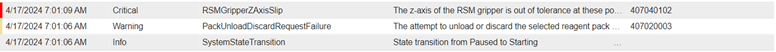
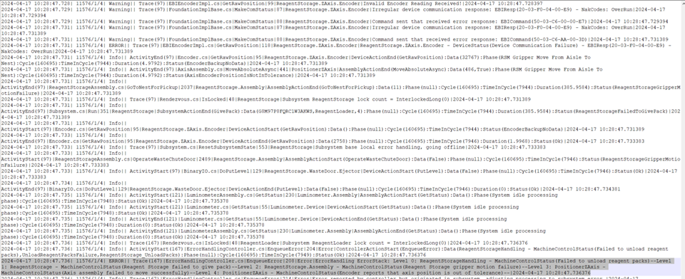
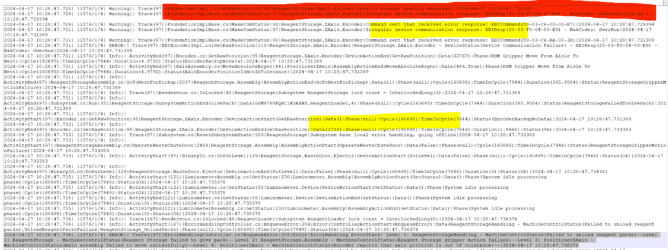

Analyzing Log Files
This topic includes information about how to analyze DxI 9000 log files.
| Table of Contents |
|---|
| Log Locations |
| Log File Types |
| Log Entry Structure |
| Machine Control Log Command Execution |
| Elements of Troubleshooting an Error Using Log Files |
| Concepts of Log File Examination |
| Summary |
Log Locations
All Logs are found in their respective folders on the instrument in D:\ProgramData\Beckman Coulter\Logs.
Log File Types
Log files are in plain text.
| Name | Details |
|---|---|
| Falcon Machine Control | Records all hardware instructions. |
| Dolphin.Falcon.Application.ConsoleApp | Records all interactions with the console interface. |
DACs:
|
Record all interactions with the console interface. Note: Mostly used by software developers for indepth troubleshooting.
|
| Agents | Records interaction with background processes. |
Log Entry Structure
Log:
2020-04-08 16:01:00.764|5|Info||Trace|StepperMotor.cs|MoveRelativeAsync|600|AliquotSamplePipettor.ZAxis.Motor|DeviceActionStart(MoveRelativeAsync):Data(-711,8):Phase(Passenger transfer phase):Cycle(20234):TimeInCycle(1263):Status(Ok)|2020-04-08 16:01:00.764830
| Entry | Details |
|---|---|
| Times |
2020-04-08 16:01:00.764 - when this log statement was added to the log file. 2020-04-08 16:01:00.764830 - when this actually happen. |
| Info | Severity (Info. Warning, Error, Critical) |
| MoveRelativeAsync | What instrument was doing. |
| Data(-711,8) | Motor was moved from position -711 to position 8. |
| Phase(Passenger transfer phase) | At what phase in the process this happen. |
| TimeInCycle (1263) | This happen at 1263 milliseconds during 8 seconds Instrument Cycle |
| UTC Time | PST (UTC-8) | MST (UTC-7) | CST (UTC-6) | EST (UTC-5) | GMT (UTC+0) | CET (UTC+1) | EET (UTC+2) | MSK (UTC+3) | IST (UTC+5:30) | CST (UTC+8) | JST (UTC+9) | AEDT (UTC+11) |
| 00:00 | 16:00 (Prev) | 17:00 (Prev) | 18:00 (Prev) | 19:00 (Prev) | 00:00 | 01:00 | 02:00 | 03:00 | 05:30 | 08:00 | 09:00 | 11:00 |
| 01:00 | 17:00 (Prev) | 18:00 (Prev) | 19:00 (Prev) | 20:00 (Prev) | 01:00 | 02:00 | 03:00 | 04:00 | 06:30 | 09:00 | 10:00 | 12:00 |
| 02:00 | 18:00 (Prev) | 19:00 (Prev) | 20:00 (Prev) | 21:00 (Prev) | 02:00 | 03:00 | 04:00 | 05:00 | 07:30 | 10:00 | 11:00 | 13:00 |
| 03:00 | 19:00 (Prev) | 20:00 (Prev) | 21:00 (Prev) | 22:00 (Prev) | 03:00 | 04:00 | 05:00 | 06:00 | 08:30 | 11:00 | 12:00 | 14:00 |
| 04:00 | 20:00 (Prev) | 21:00 (Prev) | 22:00 (Prev) | 23:00 (Prev) | 04:00 | 05:00 | 06:00 | 07:00 | 09:30 | 12:00 | 13:00 | 15:00 |
| 05:00 | 21:00 (Prev) | 22:00 (Prev) | 23:00 (Prev) | 00:00 | 05:00 | 06:00 | 07:00 | 08:00 | 10:30 | 13:00 | 14:00 | 16:00 |
| 06:00 | 22:00 (Prev) | 23:00 (Prev) | 00:00 | 01:00 | 06:00 | 07:00 | 08:00 | 09:00 | 11:30 | 14:00 | 15:00 | 17:00 |
| 07:00 | 23:00 (Prev) | 00:00 | 01:00 | 02:00 | 07:00 | 08:00 | 09:00 | 10:00 | 12:30 | 15:00 | 16:00 | 18:00 |
| 08:00 | 00:00 | 01:00 | 02:00 | 03:00 | 08:00 | 09:00 | 10:00 | 11:00 | 13:30 | 16:00 | 17:00 | 19:00 |
| 09:00 | 01:00 | 02:00 | 03:00 | 04:00 | 09:00 | 10:00 | 11:00 | 12:00 | 14:30 | 17:00 | 18:00 | 20:00 |
| 10:00 | 02:00 | 03:00 | 04:00 | 05:00 | 10:00 | 11:00 | 12:00 | 13:00 | 15:30 | 18:00 | 19:00 | 21:00 |
| 11:00 | 03:00 | 04:00 | 05:00 | 06:00 | 11:00 | 12:00 | 13:00 | 14:00 | 16:30 | 19:00 | 20:00 | 22:00 |
| 12:00 | 04:00 | 05:00 | 06:00 | 07:00 | 12:00 | 13:00 | 14:00 | 15:00 | 17:30 | 20:00 | 21:00 | 23:00 |
| 13:00 | 05:00 | 06:00 | 07:00 | 08:00 | 13:00 | 14:00 | 15:00 | 16:00 | 18:30 | 21:00 | 22:00 | 00:00 (Next) |
| 14:00 | 06:00 | 07:00 | 08:00 | 09:00 | 14:00 | 15:00 | 16:00 | 17:00 | 19:30 | 22:00 | 23:00 | 01:00 (Next) |
| 15:00 | 07:00 | 08:00 | 09:00 | 10:00 | 15:00 | 16:00 | 17:00 | 18:00 | 20:30 | 23:00 | 00:00 (Next) | 02:00 (Next) |
| 16:00 | 08:00 | 09:00 | 10:00 | 11:00 | 16:00 | 17:00 | 18:00 | 19:00 | 21:30 | 00:00 (Next) | 01:00 (Next) | 03:00 (Next) |
| 17:00 | 09:00 | 10:00 | 11:00 | 12:00 | 17:00 | 18:00 | 19:00 | 20:00 | 22:30 | 01:00 (Next) | 02:00 (Next) | 04:00 (Next) |
| 18:00 | 10:00 | 11:00 | 12:00 | 13:00 | 18:00 | 19:00 | 20:00 | 21:00 | 23:30 | 02:00 (Next) | 03:00 (Next) | 05:00 (Next) |
| 19:00 | 11:00 | 12:00 | 13:00 | 14:00 | 19:00 | 20:00 | 21:00 | 22:00 | 00:30 (Next) | 03:00 (Next) | 04:00 (Next) | 06:00 (Next) |
| 20:00 | 12:00 | 13:00 | 14:00 | 15:00 | 20:00 | 21:00 | 22:00 | 23:00 | 01:30 (Next) | 04:00 (Next) | 05:00 (Next) | 07:00 (Next) |
| 21:00 | 13:00 | 14:00 | 15:00 | 16:00 | 21:00 | 22:00 | 23:00 | 00:00 (Next) | 02:30 (Next) | 05:00 (Next) | 06:00 (Next) | 08:00 (Next) |
| 22:00 | 14:00 | 15:00 | 16:00 | 17:00 | 22:00 | 23:00 | 00:00 (Next) | 01:00 (Next) | 03:30 (Next) | 06:00 (Next) | 07:00 (Next) | 09:00 (Next) |
- (Prev) indicates the previous day. For example, if it's 00:00 UTC and the corresponding time in PST is 16:00 (Prev), it means 16:00 on the previous day.
- (Next) indicates the next day. For example, if it's 18:00 UTC and the corresponding time in AEDT is 05:00 (Next), it means 05:00 on the following day.
Machine Control Log Command Execution
- Subsystem
- Assembly
- Subassembly
- Device
Commands:
AliquotSamplePipettor|SubsystemActionStart (RendezvousAndLockPosition):Data(0,TipSupply,82):Phase(Passenger transfer phase)
AliquotSamplePipettor.Assembly|AssemblyActionStart ( PreMoveMotor ):Data( AliquotSamplePipettor.ZAxis,Give_Tip,ZAxisDown ):Phase(Passenger transfer phase)
AliquotSamplePipettor.ZAxis.Motor|DeviceActionStart ( GetCurrentPosition ):Data():Phase(Sample Aliquot Action phase)
AliquotSamplePipettor.ZAxis.Motor|DeviceActionEnd ( GetCurrentPosition ):Data(-428):Phase(Sample Aliquot Action phase)
AliquotSamplePipettor.ZAxis.Encoder|DeviceActionStart ( GetRawPosition ):Data():Phase(Passenger transfer phase)
AliquotSamplePipettor.ZAxis.Encoder|DeviceActionEnd ( GetRawPosition ):Data(31):Phase(Passenger transfer phase):Cycle(20234)
AliquotSamplePipettor.Assembly|AssemblyActionEnd ( PreMoveMotor ):Data( AliquotSamplePipettor.ZAxis,Give_Tip,ZAxisDown ):Phase(Passenger transfer phase)
AliquotSamplePipettor|SubsystemActionEnd (RendezvousAndLockPosition):Data(0,TipSupply,82):Phase(Passenger transfer phase)
Elements of Troubleshooting an Error Using Log Files
| Elements | Details |
|---|---|
| System Event
 |
The system event is key to quickly finding the proper location with in the log files. If you do not have the actual system event with the time stamp, then use Intelliserve dashboard to find the time stamp of the incident you are investigating. |
| Log Files | Obtain the proper log files for issues being investigated. Points to remember Event Messages are in Local (System Time) Log files are named using UTC. You may have to obtain the full day of files which will be in a Zip archive named for the day created. |
| Text Editor or Viewer |
You can use any text editor to investigate the log files. Notepad, WordPad are on the instruments. Text Editors like Notepad++ are very effective and easy to use. Note: Notepad is slow with large files and is not recommended and Wordpad be used instead. When analyzing log files on the instrument is done under BeckmanAdmin and when instrument is in not running tests. |
| Process doesn't matter on type of error | Whether the error is a movement error, sample detection error, communication error the process is the same for investigating the log files. |
| Process can span multiple files | When investigating log files remember that the investigation may span across multiple log files to find root cause |
| Subsystem indicated in system event may not be the initial failure | Due to the complexity and speed at which the DXI 9000 operates, cascade errors may cause the subsystem indicated by the system event to be different than the actual root cause. |
Concepts of Log File Examination
- Using the system event indicated earlier "The z-axis of the RSM gripper is out of tolerance" Search the appropriate log file using the editors search function to search for the system event. This will be your starting point.
Log:

- From the error event work back in reverse order of time stamps until you no longer see messages about error handling. Once you find beginning of error handling, That is where you will find the First error and root cause.
Log:

Summary
- Use the System Event message and time stamp as a search starting point.
- Look for the error message from system event.
- Working backwards through the log file to look for point where error handling began.
- Search multiple log files as event may span multiple files.
Note: It doesn't matter the type of event as you can search for a Rack ID, Event, Severity Flag the same method works for all the events.